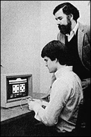

|
 Richard Broughton conducts a PK test using a "competitive game of chance." 4: What Is Psychokinesis? Proving the effect is one thing; explaining the cause is another. Most often, researchers place PK in a quantum physics context, where the physical world has less to do with reality than with our perception of that reality. "One interpretation of the results," Broughton says, "is that human consciousness is the ultimate reality. Data isn't real until subjects perceive it. Further, subjects can alter reality when they perceive it." The "perception is reality" school of thought grew when physicists studied the nature of electrons and noticed that they exhibited both particle-like and wave-like behavior. The duality led to the uncertainty principle: The more scientists studied one aspect of an electron, such as its position, the less precisely they could know something else, such as its momentum. In his book Lonely Hearts of the Cosmos, Dennis Overbye explains how physicist Niels Bohr applied the uncertainty principle to electron experiments: "The electron had no position or momentum before it was measured. In some sense the electron itself did not exist before it made its mark on a laboratory apparatus." Bohr said electrons were like waves, smeared across space, going around corners and through walls. Theoretically, if enough particles could exhibit wave-like behavior, a baseball could pass through a plate glass window without harm to either. Overbye writes: "At the moment of actual scrutiny of an electron or a baseball, Bohr concluded, the wave function magically 'collapsed' to a specific answer to whatever question was being asked. But the scientist had to ask -- otherwise nature didn't answer." PK researchers say it is the person observing the REG machine and willing the line to move that makes the line move. Broughton says the results of his experiments don't appear to indicate a mental force tweaking the atoms in his machines. Rather, he says, the human consciousness is inserting information in the machine, affecting its probability. Jahn and Dunne agree, saying that consciousness, not external reality, is the ultimate factor in any observation. Therefore, the consciousness of the observer can alter the behavior of waves and particles... even in machines. Dunne explains that one of their REG machines generates a random line across the screen. "Like flipping a coin, you have no way to predict the outcome. As the operators use their intent to interact with the machines, the distribution seems to reflect a few more heads or tails. The probability of its output may only change from .50 (fifty/fifty odds) to .49 or .48, but it is a measurable change. "Just how it occurs we don't know," she says. "It's as if information has been introduced and the entropy thereby reduced. And distance doesn't seem to matter. If the operator is a foot from the machine or around the world, the results are the same. "So it's not the classical model theorizing magnetic radiation from the brain or something. It's not a physical force. It's more a matter of altering the fundamental information content than changing the machine itself. Somehow, operators combine their intention with a sense of self-extension, as if they were part of the machine. The division between operator and machine grows blurry. It's like a system and its component parts -- operator plus machine -- somehow producing the results." At the turn of the century, scientific theory held that matter and energy were separate. Einstein proposed that they were two forms of the same thing. "I think matter and mind might also be of the same energy," says Radin. "When you focus your mind on a physical device, some aspect of yourself becomes identical with some piece of matter. Some people can automatically put a lot of english on a bowling ball, for instance, because they're part of the hall. With a random generator, there's less inertia and it's easier to move. You can place your mind in it and make it do something." In the British Broadcasting Corporation's television show, Heretics of Science, Robert Jahn said, "It may just be that, beyond the odd logical analytical dimensions of the human mind, there is a whole other pattern of softer, intuitive spiritual capabilities that connect it in this wave-mechanical way with a universe that also has its own spiritual wave-mechanical dimensions. And it is in that universe of interaction, the spiritual part of human consciousness with the spiritual part of the universe, that these anomalies seem to manifest themselves." Copyright (c) 1997 Llewellyn Worldwide, Ltd. http://www.llewellyn.com
|